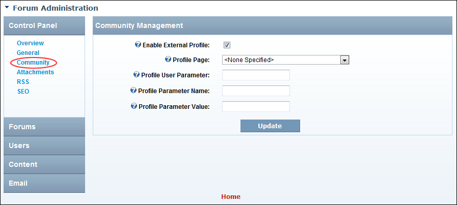

Configuring the Forum Community Management Settings
How to enable the use of an external non-core module to display profile information. Note: This is not necessary for most installs.
- Go to the Forum Administration page. See "Navigating to the Forum Admin Page"
- In the left-hand panel, select Control Panel > Community. This displays the Community Management window.
- At Enable External Profile, to enable use of a non-core module for user profiles. This exposes additional settings - OR - to disable external profile and skip to Step 8.
- At Profile Page, select the page that contains your profile module.
- In the Profile User Parameter text box, enter the URL parameter associated with the UserID necessary for user profiles. This parameter is required by the non-core module.
- In the Profile Parameter Name text box, enter the extra URL property for the non-core module. The URL parameter name will be passed in combination with the value for external profile pages.
- In the Profile Parameter Value text box, enter a value to be passed in combination with Parameter Name for the non-core module.
-
Click the Update button.

Forum Community Management Settings